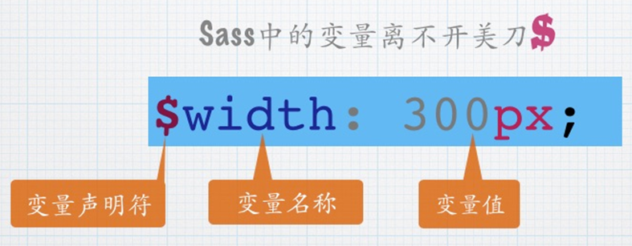

为什么要选择CSS预处理语言
我们学web的都知道CSS。CSS是一门描述性的语言，它有一些自身的局限性，只能一行一行单纯地描述， 并不能像其他的编程语言那样使用变量、循环、运算等方式来操作；还有，不利于代码的复用性、模块化等。 CSS预处理器的出现，使得我们可以像操作JavaScript那样以“编程”的方式来书写CSS。 在CSS预处理器中，我们可以使用变量、循环、函数等方式来简化操作，提高开发效率 CSS预处理器，说白了就是用编程方式来写CSS的一类语言，来解决CSS的局限性，就这么简单。
国内常用的有less和sass，这节，我们选择sass来讲。
为何选择sass？
仁者见仁智者见智。个人选择Sass的原因：
1、Sass也是成熟的CSS预处理器之一，而且有一个稳定，强大的团队在维护；
2、Sass对于我来说参考的教程多；
3、Sass有一些成熟稳定的框架。特别是Compass、Foundation之类；
4、还有一个原因是国外讨论Sass的同行要多于LESS，出于这几个原因，
我想我学习或者使用Sass更容易一些，
碰到问题更有参考资料， 更有朋友帮忙解决；
5、bootstrap的4.0+版本用了。
这是自身看法，仅供参考。
sass的语法
1、Sass 变量
2、Sass 继承
4、Sass 占位符
3、Sass 混合宏
sass的语法
tip:实际上，在sass的大 多数地方，中划线命名的内容和下划线命名的内容是互通的， 比如bg-color和bg_color是一样，除了变量，也包括对混合器和Sass函数的命名。
变量
$fontSize: 12px;
body{
font-size:$fontSize;
}
body{
font-size:12px;
}
什么时候创建变量？
我的建议，创建变量只适用于感觉确有必要的情况下。 不要为了某些骇客行为而声明新变量，这丝毫没有作用。 只有满足所有下述标准时方可创建新变量： 该值至少重复出现了两次； 该值至少可能会被更新一次； 该值所有的表现都与变量有关（非巧合）。 基本上，没有理由声明一个永远不需要更新或者只在单一地方使用变量。
继承
.btn {
border: 1px solid #ccc;
padding: 6px 10px;
font-size: 14px;
}
.btn-primary {
background-color: #f36;
color: #fff;
@extend .btn;
}
.btn-second {
background-color: orange;
color: #fff;
@extend .btn;
}
当在局部范围（选择器内、函数内、混合宏内...） 声明一个已经存在于全局范围内的变量时， 局部变量就成为了全局变量的影子。 基本上局部变量只会在局部范围内覆盖全局变量。
$color: orange !default;//定义全局变量
.block {
color: $color;//调用全局变量
}
em {
$color: red;//定义局部变量（全局变量 $color 的影子）
a {
color: $color;//调用局部变量
}
}
占位符（%placeholder）
Sass 中的占位符 %placeholder 功能是一个很强大， 很实用的一个功能，这也是我非常喜欢的功能。 他可以取代以前 CSS 中的基类造成的代码冗余的情形。因为 %placeholder 声明的代码，如果不被 @extend 调用的话，不会产生任何代码。
%mt5 {
margin-top: 5px;
}
%pt5{
padding-top: 5px;
}
.btn {
@extend %mt5;
@extend %pt5;
}
.block {
@extend %mt5;
span {
@extend %pt5;
}
}
混合宏
我个人的看法：混合宏，其实就是是带入了函数的思想
(1)不传参数
(2)传参数
(1)不传参数
@mixin border-radius
{
-webkit-border-radius: 5px;
border-radius: 5px;
}
我们在后面用@include调用它就可以了
(2)传参的mixin
@mixin center($width,$height)
{
width: $width;
height: $height;
position: absolute;
top: 50%;
left: 50%;
margin-top: -($height) / 2;
margin-left: -($width) / 2;
}
.box-center
{
@include center(500px,300px);
}
3.常见问题
上面的几种方式，有些很像，我们如何在适当的时候用适当的方法？ 比如什么时候用继承，什么时候用占位符？
然而，混合宏是用在一些复杂的多属性的调用，或者是复杂的逻辑， 而且它是唯一能传递参数的！！